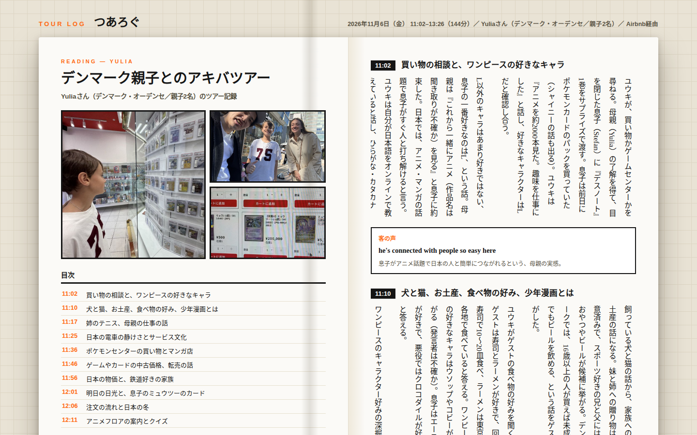
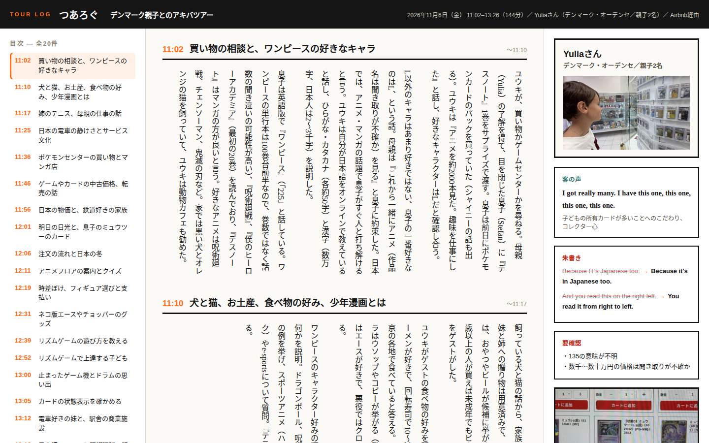
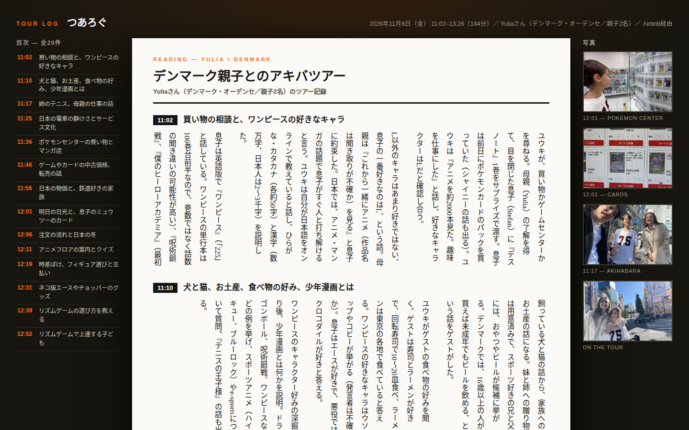
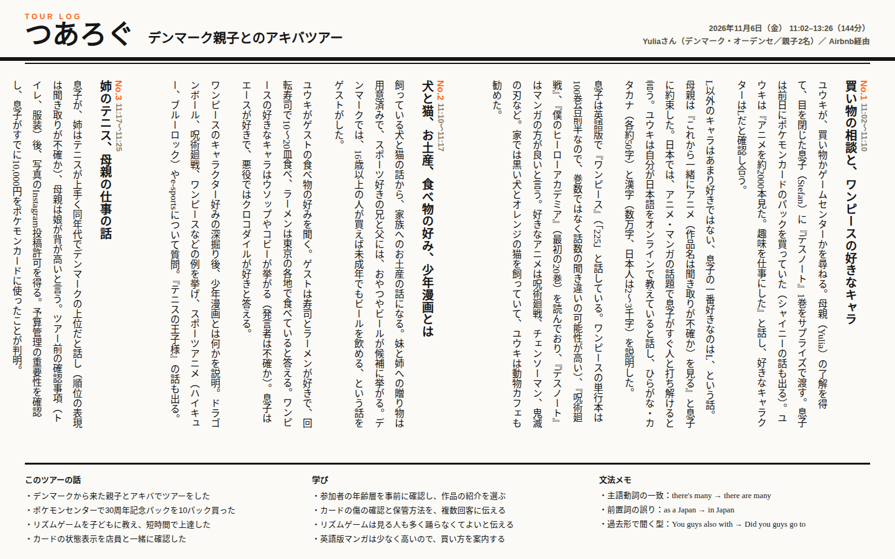
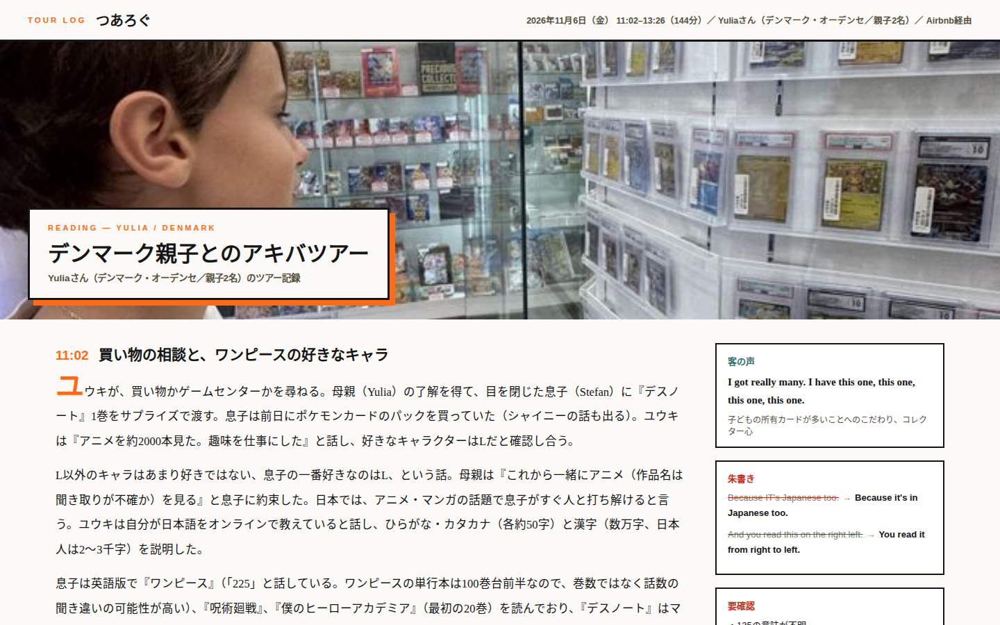

本の見開きで読む。左ページに写真と目次、右ページに縦書き本文。紙の質感と影で「読む物」らしさを出す。

サンプルはYulia回（デンマーク親子とのアキバツアー／2026年11月6日）の実コンテンツです。 各案はデスクトップ幅1440pxの実寸モックで、スクリーンショットをタップするとそのまま開けます。本番ページは変更していません。
本の見開きで読む。左ページに写真と目次、右ページに縦書き本文。紙の質感と影で「読む物」らしさを出す。

左に目次、中央に本文、右に写真と注記を固定し、各ペインが独立スクロールするPCアプリらしい構成。

暗い背景の中央に紙のシートを浮かべ、本文ステージを大きく取る。目次と写真は両脇に控えめに配置。

画面全幅に縦書きの段組を右から左へ流し、写真を段の間に差し込む。下段に要約ストリップ。

大きな写真ヒーローの下に横書き本文カラム＋サイドに朱書きと客の声。縦書きを捨てた比較案。

つあろぐ（TOUR LOG）読み物ページ PC版リデザイン検討用ボード。選ばれた案だけを後で本番へ実装します。